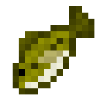
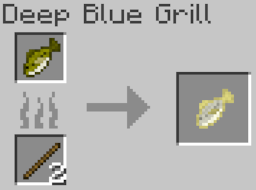
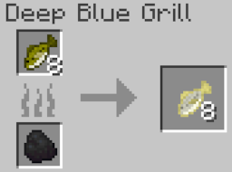
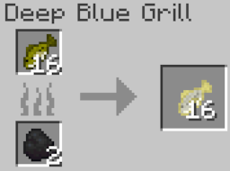
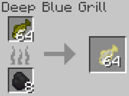
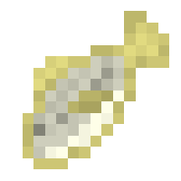

Largemouth Bass
The largemouth bass is a common fresh water fish that can be used as a source of food or be kept as a pet by the
player. It is passive towards the player and can drop items such as bone meal or raw largemouth bass.
Spawning
Largemouth Basses are common solitary fish that spawn exclusively in rivers. The way largemouth bass spawn naturally is by replacing some naturally spawning aquatic mob. In rivers, each salmon has a chance to be replaced with a largemouth bass. The table below shows the spawn rates of the largemouth bass in the biome it spawns in.
| Biome | Spawn Chance (Replacement Chance) | Group Size |
|---|---|---|
| River | 20% (Salmon) | 1 |
Items
Item drop chances
Largemouth bass can drop 2 items, bone meal or raw catfish. Upon death, it is guaranteed to drop 1 raw largemouth bass, only if a player kills it. Similarly, it will only drop 1-2 bone meal (equal chance for both) if the player kills it. Below is a table that shows the item drop chances.
| Item | Chance (If killed by player) | Count |
|---|---|---|
| Raw Largemouth Bass | 100% | 1 |
| Bone meal |
50% 50% |
1 2 |
Raw Largemouth Bass

Raw Largemouth Bass is an item that is exclusively dropped by the largemouth bass, stackable up to 64 in one item slot. It has a 100% chance to be dropped by the bass if the player kills it. Below are the food stats of the raw largemouth bass:
- Nutrition: 2
- Saturation: 0.4
Cooking
The raw largemouth bass can only be cooked using the Deep Blue Grill. Like every other mob food item in Blue Depths, you can only cook the bass as 1, 8, 16, or 64 using either sticks (only if you want to cook one), coal, or charcoal as fuel. Below are images showing how to cook the various counts of raw largemouth bass:




Cooked Largemouth Bass

Cooked Largemouth Bass can be obtained when a player cooks Raw Largemouth Bass in the Deep Blue Grill. It is used as new source of food for the player, stackable up to 64 in one item slot. Below are the food stats of the cooked catfish:
- Nutrition: 7
- Saturation: 10
Behavior
Largemouth bass are passive mobs, meaning they do not attack the player. They are ambient fish that swim around midwater in rivers.
Obtaining Largemouth Bass
Bucket of Largemouth Bass
Because of their size they can actually be kept as pets and transported via water buckets. The player only needs to use a bucket of water near the bass to scoop it up, replacing their water bucket with a bucket of largemouth bass. Like with vanilla Minecraft mobs, right clicking the ground with the bucket of largemouth bass will place water and the bass, giving the player an empty bucket. When a bass is placed down via the bucket, it won't despawn, unlike wild, naturally spawning bass who will despawn when the player leaves the area.
History
Development History
| Datapack Version | Addition/Change |
|---|---|
| 1.1.0 (Roaring Rivers Part 1: Below the Surface) |
|